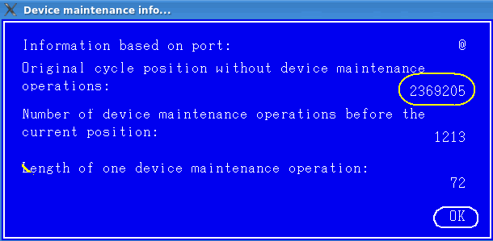

Displaying the information about device maintenance operations
Maintenance operations are procedures that need to be performed regularly during the testing of a device, most commonly refreshes. The Timing Diagram tool shows you the information about the device maintenance operations which took place in the currently displayed pattern up to the current cycle. Thus you can match the cycle number displayed in the Timing Diagram Tool to the cycle number in the pattern.
Before you begin
The maintenance operations have been performed.
Procedure
In the Timing Diagram Tool, select your desired pin and cycle, and then choose .
Results
The Device maintenance info window opens, displaying the information about the maintenance operations based on the selected pin and cycle in the Timing Diagram Tool.

Functional changes
- Introduced in SmarTest 6.3.4